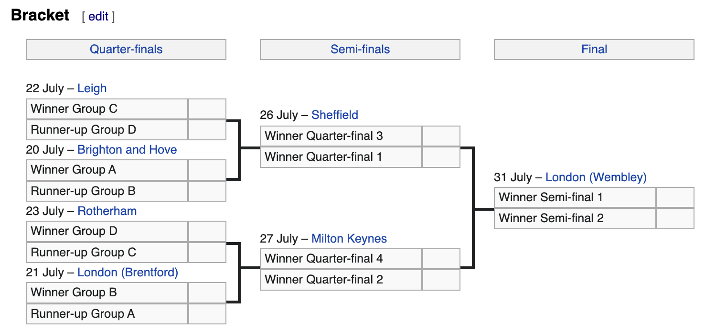

Simulation
Contents
Simulation#
We will use the group odds (which have nothing to do with our power ratings… they are implied from betting odds) to simulate the outcome of the group stage, and then we will use the power ratings to simulate the knockout stage.
Group stage#
These outcomes are based on the implied odds from the betting odds, as we computed here.
import pandas as pd
import numpy as np
rng = np.random.default_rng()
df_odds = pd.read_csv("data/gp_odds.csv")
df_odds.head(4)
| Group | Team | Odds | Prob | Implied | Site | Date | |
|---|---|---|---|---|---|---|---|
| 0 | Group A | England | -250 | 0.714286 | 0.657555 | Bet Online | 2022-07-03 |
| 1 | Group A | Norway | 250 | 0.285714 | 0.263022 | Bet Online | 2022-07-03 |
| 2 | Group A | Austria | 1400 | 0.066667 | 0.061372 | Bet Online | 2022-07-03 |
| 3 | Group A | Northern Ireland | 5000 | 0.019608 | 0.018051 | Bet Online | 2022-07-03 |
Here is an example of one simulation.
gp_top2 = {}
for gp, df_sub in df_odds.groupby("Group"):
gp_top2[gp] = rng.choice(df_sub["Team"], size=2, replace=False, p=df_sub["Implied"])
gp_top2
{'Group A': array(['Norway', 'England'], dtype=object),
'Group B': array(['Germany', 'Spain'], dtype=object),
'Group C': array(['Sweden', 'Netherlands'], dtype=object),
'Group D': array(['France', 'Iceland'], dtype=object)}
Simulate match#
Once we know the simulated outcomes of the group stage, we will simulate individual matches as we progress through the knockout stage. To simulate the group stage, we only used the betting odds. For the individual matches, we will use a completely different strategy, and only use the power ratings computed in the power ratings section.
For each pair of teams, we will use the method from the Example computation section to estimate the probability that Team 1 defeats Team 2. (For now, we will just ignore draws.)
In matches involving England, we will include the home-field advantage. We will not use home-field advantage for any of the other teams.
ratings = pd.read_csv("data/ratings.csv", index_col=0).squeeze("columns")
Here are the five highest ranked teams.
ratings[:5]
England 1.818341
Spain 1.805690
Belgium 1.564538
Sweden 1.486001
Italy 1.432286
Name: 0, dtype: float64
match_probs = {}
teams = df_odds["Team"].unique()
from itertools import combinations
match_dict = {}
b = ratings["const"]
hfa = ratings["HFA"]
n = 10**7
for pair in combinations(teams,2):
r0 = ratings[pair[0]]
r1 = ratings[pair[1]]
h0 = 0
h1 = 0
if pair[0] == "England":
h0 = hfa
elif pair[1] == "England":
h1 = hfa
lam = (np.exp(b+r0-r1+h0), np.exp(b+r1-r0+h1))
scores = rng.poisson(lam, size=(n,2))
wins = np.count_nonzero(scores[:,0] > scores[:,1])
losses = np.count_nonzero(scores[:,0] < scores[:,1])
match_dict[pair] = (wins/(wins+losses), losses/(wins+losses))
As a reality check, let’s check the probability that Denmark beats Austria. In that order, the tuple doesn’t appear.
match_dict[("Denmark", "Austria")]
---------------------------------------------------------------------------
KeyError Traceback (most recent call last)
Input In [91], in <cell line: 1>()
----> 1 match_dict[("Denmark", "Austria")]
KeyError: ('Denmark', 'Austria')
So we use the opposite order.
match_dict[("Austria", "Denmark")]
(0.8036677766866809, 0.19633222331331915)
The above is saying that Denmark has about a 20% chance of beating Austria. (Because of the randomness in these simulations, the results might change when this is run again.)
For convenience, we’ll make a new dictionary full_matches that also contains each “reversed” tuple.
full_matches = match_dict.copy()
for tup in match_dict.keys():
res = match_dict[tup]
full_matches[(tup[1], tup[0])] = (res[1], res[0])
full_matches[("Denmark", "Austria")]
(0.19633222331331915, 0.8036677766866809)
We’ll save the results so we don’t need to make the computation again.
pd.Series(full_matches).to_csv("data/match_probs.csv")
Knockout stage#
Here is the tournament bracket, taken from Wikipedia.

Let’s see how to feed the results of the group stage into this sort of bracket. Since there are only 8 teams, we’ll just specify the matchups manually. For example, “C0” refers to the winner of Group C and “C1” refers to the runner-up in Group C.
bracket_abbr = "C0D1A0B1D0C1B0A1"
bracket_str = [bracket_abbr[i:i+2] for i in range(0,len(bracket_abbr),2)]
bracket
['England']
gp_top2
{'Group A': array(['Norway', 'England'], dtype=object),
'Group B': array(['Spain', 'Germany'], dtype=object),
'Group C': array(['Netherlands', 'Sweden'], dtype=object),
'Group D': array(['Italy', 'France'], dtype=object)}
# s is a length-2 string like "C0"
def get_team(s, gp_top2):
letter, place = s
return gp_top2[f"Group {letter}"][int(place)]
get_team("C0", gp_top2)
'Netherlands'
bracket = [get_team(s, gp_top2) for s in bracket_str]
bracket
['Netherlands',
'France',
'Norway',
'Germany',
'Italy',
'Sweden',
'Spain',
'England']
We can get the probabilities associated to one of these matches using our full_matches dictionary from above.
match = (bracket[0], bracket[1])
match
('Netherlands', 'France')
full_matches[match]
(0.7225502700776059, 0.27744972992239414)
If we want to simulate this match 10 times using those probabilities, we can use rng.choice. (In our overall simulation, we will only simulate such a map once per bracket. This example is just to show how the weights work.)
rng.choice(match, size=10, p=full_matches[match])
array(['Netherlands', 'Netherlands', 'Netherlands', 'France',
'Netherlands', 'Netherlands', 'France', 'Netherlands',
'Netherlands', 'Netherlands'], dtype='<U11')
Here is an example of finding the winner after the knockout stage.
while len(bracket) > 1:
temp_list = []
for i in range(0,len(bracket),2):
match = (bracket[i], bracket[i+1])
winner = rng.choice(match, p=full_matches[match])
temp_list.append(winner)
bracket = temp_list
print(f"The winner is {bracket[0]}")
The winner is Italy
Full simulation#
Here we put together the two steps above. First we run the simulation 1 time and time how long it takes.
%%time
gp_top2 = {}
for gp, df_sub in df_odds.groupby("Group"):
gp_top2[gp] = rng.choice(df_sub["Team"], size=2, replace=False, p=df_sub["Implied"])
bracket = [get_team(s, gp_top2) for s in bracket_str]
while len(bracket) > 1:
temp_list = []
for i in range(0,len(bracket),2):
match = (bracket[i], bracket[i+1])
winner = rng.choice(match, p=full_matches[match])
temp_list.append(winner)
bracket = temp_list
print(f"The winner is {bracket[0]}")
The winner is England
CPU times: user 6.67 ms, sys: 1.94 ms, total: 8.6 ms
Wall time: 6.76 ms
Here we simulate the tournament two million times. We have repeated this a few times, and the results come out very similar each time, so there is probably not much to be gained by running the simulation more times.
n = 2*10**6
results_dict = {team:0 for team in teams}
for _ in range(n):
gp_top2 = {}
for gp, df_sub in df_odds.groupby("Group"):
gp_top2[gp] = rng.choice(df_sub["Team"], size=2, replace=False, p=df_sub["Implied"])
bracket = [get_team(s, gp_top2) for s in bracket_str]
while len(bracket) > 1:
temp_list = []
for i in range(0,len(bracket),2):
match = (bracket[i], bracket[i+1])
winner = rng.choice(match, p=full_matches[match])
temp_list.append(winner)
bracket = temp_list
results_dict[bracket[0]] += 1
# sorting by probability
prob_dict = {team: (win/n) for team, win in sorted(results_dict.items(), key=lambda x: x[1], reverse=True)}
prob_dict
{'England': 0.510956,
'Spain': 0.2541105,
'Sweden': 0.074987,
'Netherlands': 0.0500265,
'Italy': 0.0331855,
'Belgium': 0.0230885,
'Norway': 0.0179235,
'Germany': 0.011113,
'Iceland': 0.0102955,
'France': 0.0072075,
'Austria': 0.00506,
'Switzerland': 0.0018255,
'Denmark': 0.000188,
'Northern Ireland': 2.45e-05,
'Finland': 8e-06,
'Portugal': 5e-07}
Convert to odds#
So that the numbers are easier to compare to betting odds, we display what would be fair odds according to the simulation for each team to win the tournament.
Warning. The England odds are so different from the current (as of July 3rd) market odds, that our simulation is certainly over-estimating England’s chances.
def prob_to_odds(p):
if p < .000001:
return np.nan
if p > .999999:
return np.nan
if p > 0.5:
x = 100*p/(p-1)
return f"{x:.0f}"
elif p <= 0.5:
x = 100*(1-p)/p
return f"+{x:.0f}"
pd.Series({team:prob_to_odds(prob) for team,prob in prob_dict.items()})
England -104
Spain +294
Sweden +1234
Netherlands +1899
Italy +2913
Belgium +4231
Norway +5479
Germany +8898
Iceland +9613
France +13774
Austria +19663
Switzerland +54680
Denmark +531815
Northern Ireland +4081533
Finland +12499900
Portugal NaN
dtype: object